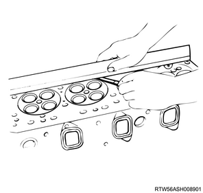

Cylinder head assembly inspection (4JJ1)
1. Cylinder head assembly measurement
1. Align a simple straight ruler to the cylinder head.
Note
- Align the simple straight ruler as shown in the diagram below.
2. Measure deformation using a feeler gauge.
Note
- As shown in the diagram, measure the four sides and two diagonal lines with a feeler gauge.
- Replace the cylinder head if the deformation of the bottom surface of the cylinder head exceeds the limit.

Standard： 0.05 mm or less { 0.002 in or less }
Limit： 0.20 mm { 0.008 in }
Caution
- Do not allow to regrind the bottom surface of the cylinder head.
3. Align a simple straight ruler to the cylinder head.
Note
- Align the simple straight ruler as shown in the diagram below.
4. Measure deformation using a feeler gauge.
Note
- Measure the four sides and diagonal line of the exhaust manifold installation surface with a feeler gauge.
Standard： 0.05 mm or less { 0.002 in or less }
Limit： 0.2 mm { 0.008 in }
Note
- If the measured value exceeds the specified limit and is less than the maximum polish allowance, regrind the installation surface of the manifold.
Maximum polish allowance： 0.4 mm { 0.016 in }
Note
- If the measured value exceeds the maximum polish allowance, the cylinder head must be replaced.
2. Valve stem end cap inspection
1. Inspect the valve stem end cap.
Note
- Replace if the worn or damage is excessive.
3. Inlet valve measurement
1. Measure outer diameter using the micrometer.
Note
- Measure the outer diameters at three points.
Standard： 6.955 to 6.970 mm { 0.2738 to 0.2744 in }
Limit： 6.935 mm { 0.2730 in }
Note
- If the measured value is smaller than the specified limit, replace the valve and valve guide together.
2. Measure the valve guide using the gauge.
Note
- Measure the inner diameter of the valve guide using a caliper calibrator or telescoping gauge.
3. Calculate the clearance from measured value.
Note
- Calculate the clearance between the outer diameter of the inlet valve and the inner diameter of the valve guide.
Standard： 0.030 to 0.060 mm { 0.0012 to 0.0024 in }
Limit： 0.200 mm { 0.008 in }
Note
- If the measured value exceeds the specified limit, replace the valve and valve guide together.
4. Measure thickness using the micrometer.
Standard： 1.32 mm { 0.052 in }
Limit： 1.1 mm { 0.043 in }
Note
- If the measured value is smaller than the specified limit, replace the valve and valve guide together.
4. Exhaust valve measurement
1. Measure outer diameter using the micrometer.
Note
- Measure the outer diameters at three points.
Standard： 6.947 to 6.962 mm { 0.2735 to 0.2741 in }
Limit： 6.920 mm { 0.2724 in }
Note
- If the measured value is smaller than the specified limit, replace the valve and valve guide together.
2. Measure the valve guide using the gauge.
Note
- Measure the inner diameter of the valve guide using a caliper calibrator or telescoping gauge.
3. Calculate the clearance from measured value.
Note
- Calculate the clearance between the outer diameter of the exhaust valve and the inner diameter of the valve guide.
Standard： 0.038 to 0.068 mm { 0.0015 to 0.0027 in }
Limit： 0.250 mm { 0.0098 in }
Note
- If the measured value exceeds the specified limit, replace the valve and valve guide together.
4. Measure thickness using the micrometer.
Standard： 1.32 mm { 0.052 in }
Limit： 1.1 mm { 0.043 in }
Note
- If the measured value is smaller than the specified limit, replace the valve and valve guide together.
5. Valve seat insert measurement
1. Install the valve to the cylinder head.
2. Measure the valve using a depth gauge.
Note
- Use a depth gauge or simple steel straight ruler to measure the sinking amount of the valve from the bottom surface of the cylinder head.
Standard： 0.5 mm { 0.02 in }
Limit： 1.2 mm { 0.047 in }
Note
- If the measured value exceeds the limit, the valve seat insert must be replaced.
3. Check the contact surface of the valve seat.
Note
- Check for chaps and unevenness.
- Smooth the contact surface of the valve.
- Measure the contact surface of the valve seat.
Standard： 2.2 mm { 0.087 in } Inlet side
Limit： 3.0 mm { 0.118 in } Inlet side
Standard： 2.2 mm { 0.087 in } Exhaust side
Limit： 3.0 mm { 0.118 in } Exhaust side
Note
- If the measured value exceeds the limit, the valve seat insert must be replaced.

6. Valve seat insert adjustment
Note
- Remove the carbon from the valve seat insert top surface.
1. Adjust the valve seat to the specified value using the seat cutter.
Note
- Minimize the scratches and other uneven parts, and return the touching width to the standard value.
- 90°
- 50°
Caution
- Remove scratches and uneven parts only, and do not cut the surface too much.
- Use an adjustable valve cutter pilot.
- The valve cutter pilot should not be allowed to scrape inside the valve guide.

2. Apply the compound to the valve seat insert.
Note
- Apply the compound to the valve seat surface.
3. Install the valve to the valve guide.
4. Adjust the contact surface to the specified value using the valve lapper.
Note
- Gently tap the valve while turning it.
5. Check the contact surface of the valve seat insert.
Note
- Confirm that it is touching evenly around the entire circumference.
Caution
- After fitting, remove all applied compound.
7. Valve seat insert removal
Note
- Arc-weld the entire inner circumference of the valve seat insert.
- Cool the valve seat insert for 2 to 3 minutes.
- Cooling makes it easier to remove the valve seat insert due to the contraction.
1. Remove the valve seat insert from the cylinder head using the driver.
Caution
- Be careful not to damage the cylinder head.
- Arc welding
- Valve seat insert
- Screwdriver
8. Valve seat insert installation
1. Put the washer on the valve seat insert.
Note
- Place the washer which is smaller outer diameter than the valve seat insert with care over the valve seat insert.
2. Install the valve seat insert to the cylinder head using the press.
Note
- Gradually apply pressure to the washer and push in the valve seat insert.
Caution
- Do not apply excessive pressure with the press.
- Washer
- Valve seat insert
- Press
3. Apply the compound to the valve seat insert.
Note
- Add compound to the valve seat surface and gently tap the valve while turning it.
Caution
- Confirm that it is touching evenly around the entire circumference.